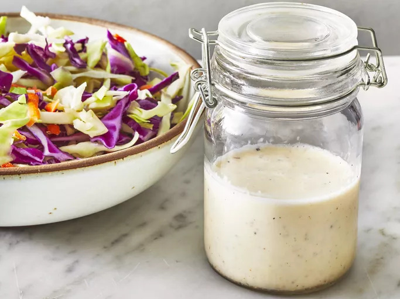

A creamy coleslaw dressing that can be made with ingredients you already have! You can pour it immediately over a 14-ounce package of coleslaw mix or refrigerate until needed.
With minimal ingredients and prep work, this top-rated coleslaw dressing is your new summer potluck secret — but don't take it from us, take it from over 1,500 reviewers who gave it a five-star rating. You can shred your own cabbage and carrots or transform store-bought coleslaw mix into a refreshing and creamy side dish with this dressing.